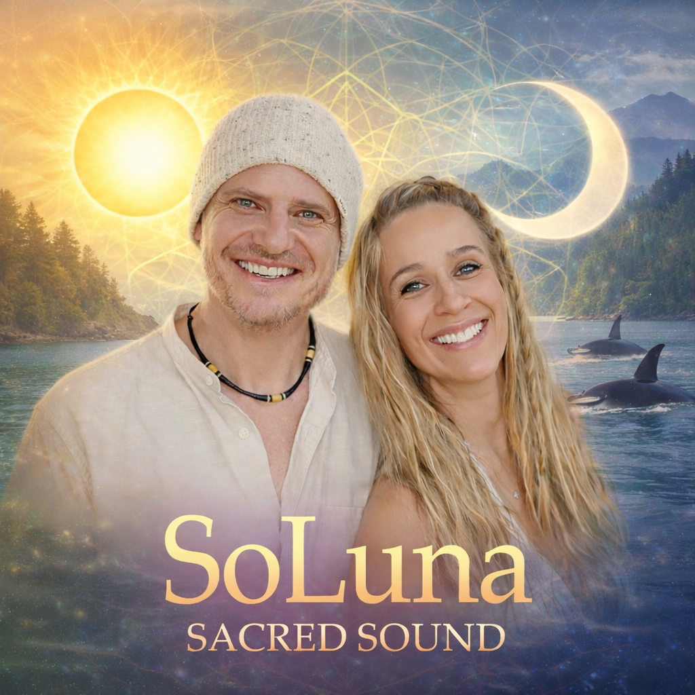
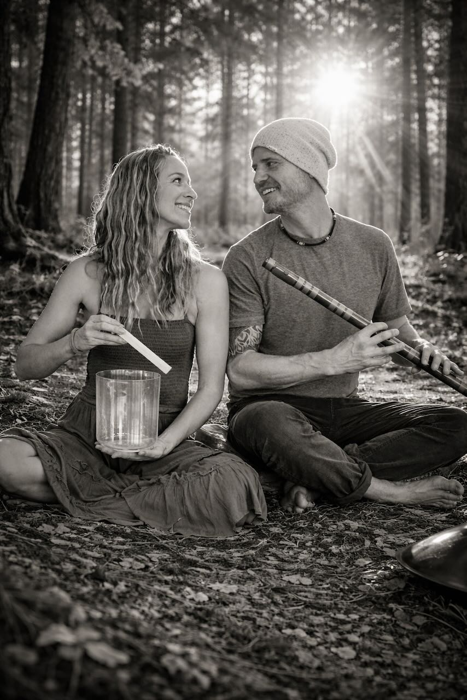

Immerse yourself in the resonant frequencies of crystal harp, handpan, gongs, and Native American flute. Relax. Reset. Rejuvenate. Reconnect with your inner harmony.
Immerse yourself in the resonant frequencies of crystal harp, handpan, gongs, and Native American flute. Relax. Reset. Rejuvenate. Reconnect with your inner harmony.

SoLuna Sacred Sound is a deeply immersive sound journey - an invitation to return home to yourself.
Created and held by Valera and Amaris, these experiences are designed as sacred spaces where you can soften, release, and reconnect with your inner world. Through intentional sound, guided presence, and subtle energetic support, we open a doorway into stillness - where the nervous system unwinds, the mind quiets, and the heart begins to speak.
Each journey is more than a Sound Bath. It is a living, breathing soundscape - crafted with care and attuned to the energy of the group and the intention of each gathering. No two journeys are ever the same. We listen deeply, and from that listening, we create.
Our sessions gently guide you into states of deep relaxation and meditation, where clarity can arise, intentions can take root, and the body can restore its natural rhythm. Elements of grounding, tranquility, and Reiki-inspired energy weaving are often present, supporting a holistic and integrative experience.
We work with a rich array of instruments - resonant gongs, crystal bowls, chimes, crystal harp, guitar, flute, xylophone, and other sacred sounds. Each instrument becomes a voice in the journey, weaving layers of vibration that guide you into expanded awareness, inner stillness, and moments of profound peace.
At its heart, SoLuna Sacred Sound is about remembrance -
remembering the quiet intelligence within you,
remembering how to rest,
and remembering the harmony that has always been there.
We are honored to walk this path with you.
Together, Valera & Amaris create a harmonious soundscape that allows you to fully unwind and connect with your inner self

Sound Bath Practitioners & Energy Healers · @valvulfson
Valera and Amaris are the heart and soul of SoLuna. Valera's approach blends resonant sounds, Native American flute, crystal harp, and handpan to create deeply meditative soundscapes, while Amaris brings a hands-on approach to energy healing and Reiki, helping participants release tension and find stillness.
Together, they craft immersive sound bath experiences infused with intention, intuition, and heart — guiding participants into profound states of relaxation and renewal. Their complementary gifts create a nurturing space where deep healing can unfold naturally.
Book a Session